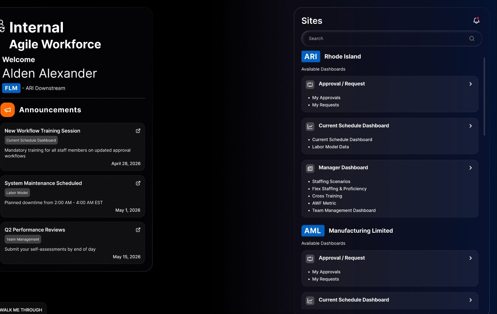

Know my work
Views the current schedule and personal dashboard, checks assigned work and submits leave requests.
View · RequestZS · Enterprise workforce product
A role-aware planning system that helps plant teams understand schedules, allocate people, manage proficiency and leave, and move staffing decisions through approval.

Overview
The challenge
Schedules, qualifications, leave, demand and approvals all affect whether the right people reach the right area at the right time.
The product had to serve multiple levels of the organization without breaking the shared operational picture. A staff member needed a focused personal view; a frontline manager needed control; managers and reviewers needed oversight and traceability.
The design challenge was to make a dense enterprise system understandable while preserving the detail required for real workforce decisions.
Design question
Roles & system
Five perspectives
Permissions were only one part of the role model. Each persona also needed a different default view, decision scope and level of operational detail.
Views the current schedule and personal dashboard, checks assigned work and submits leave requests.
View · RequestManages staff and teams, edits schedules, builds scenarios and assigns workers to tasks and plant areas.
Plan · Assign · ManageManages frontline managers, reviews dashboards and approves or rejects workforce requests.
Review · ApproveAdds notes and recommendations to FLM decisions so approvals retain the reasoning behind them.
Comment · AdviseControls access, announcements, email configuration and product-wide administrative settings.
Configure · GovernDecision loop
Review current coverage, leave and demand.
Model tasks, shifts and staffing scenarios.
Check availability and proficiency.
Assign, share or redeploy staff.
Route exceptions with notes and history.
Approach
Designing the operating model
Clarify who can view, edit, recommend and approve across staff, FLM, FAO, AB and administrator roles.
Structure plants, areas, shifts, tasks, teams, proficiency, leave and requests as one connected system.
Surface shortages, surplus capacity, overdue training and approval states where users can act on them.
Use explicit status, version history, notes and request states so workforce changes remain understandable.
Product design
The product system
The final information architecture spans the daily schedule, longer-range planning, staff development and governance. Shared patterns keep the experience coherent as responsibility increases.
Current Schedule brings shifts, rotations, plant areas, tasks, events and staffing scenarios into a filterable view. Staff can check their work and request leave; managers can inspect team coverage and edit the plan.
The Labor Model separates scheduled and non-scheduled work, including CIP and non-CIP tasks. Staffing Scenarios lets FLMs explore a plan before it becomes an operational request.
Line preparationCIP · 06:00–08:00
4 staffQuality inspectionNon-CIP · 09:00–11:00
−1 gapChangeoverNon-scheduled
2 staffTeam Management makes assigned, unassigned and shared resources visible. Flex Staffing adds proficiency and availability so managers can evaluate a move—not just find an open name.
Aarav S.Packing · Advanced
AvailableMeera K.Receiving · Certified
AssignedRohan N.Quality · Training due
ReviewMy Requests and My Approvals connect current-schedule and labor-model changes to a visible decision path. FAOs can approve or reject; AB reviewers can add the context behind an FLM decision.
Requested by Priya M. · FLM
“Coverage improves without affecting the evening shift.”AB review note
Connected modules
Personal requests, team leave schedule, balances and coverage context.
Certification status, new assignments and overdue training visibility.
Workforce questions, attention items, recommendations and predicted risks.
A dedicated view of workforce measures and operational performance.
User access, announcements, email and platform-wide configuration.
A connected workflow for downstream workforce and talent processes.
AI-assisted, human-owned
The AI dashboard surfaces staffing shortages, surplus capacity, upcoming leave and overdue cross-training. Suggestions help users investigate, while review and approval remain explicit human actions.
What is the biggest staffing risk next week?
Area 1 is likely to be three people short during peak inbound demand. Two qualified staff are available in Area 3.Outcome
What the design enabled
The system creates one role-aware structure for the operational work that surrounds a plant schedule: planning tasks, finding qualified people, managing leave, requesting changes and reviewing decisions.
Because the work is confidential, quantified results are not shared here. The portfolio takeaway is the product architecture: complexity becomes manageable when roles, objects, exceptions and decision rights are designed together.
Schedules, teams, leave and proficiency stay connected.
Each persona sees the detail and actions their responsibility requires.
Requests, notes, approval states and history preserve context.